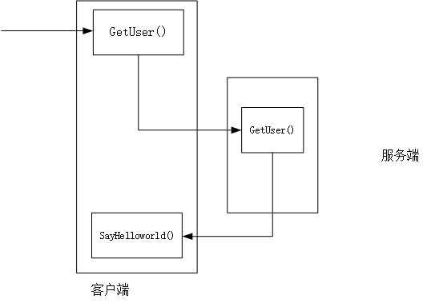
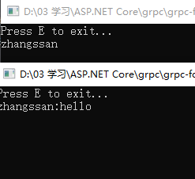
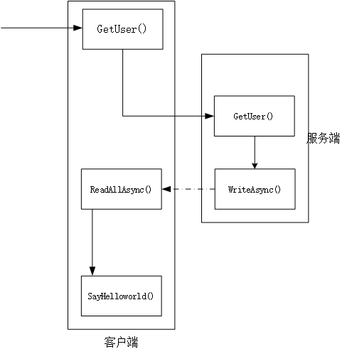

如您所知，gRPC是目前比较常见的rpc框架，可以方便的作为服务与服务之间的通信基础设施，为构建微服务体系提供非常强有力的支持。
而基于.NET Core的gRPC.NET 组件截至2019年11月30日的最新版本为2.25.0，该版本基于.netstrandard2.1进行，能够在.NET Core3.0上非常方便的实现，而且还能方便的迁移到基于.NET Core的windows桌面端开发体系。
在本文中参考微软官方文档的示例，实现了一个从WCF 服务回调机制迁移到gRPC的过程，由于时间仓促，如有疏漏，还望批评指正。第一篇主要从技术层面来分析迁移流程，第二篇打算从业务和代码整洁性角度来思考这个问题。
在新版本中，可以使用 Grpc.Net.ClientFactory 支持以依赖注入的形式AddGrpcClient，将grpc客户端引入中，而无需每一次方法调用都使用 New 关键词进行创建。 这对客户端调用来说是极大的方便，毕竟随着.NET Core的普及，对于许多开发者来说，看到 New 关键词其实是很难受的啊。
示例：
以下代码以注册了 GreetClient ，并在发送 http 请求前，对请求头信息进行修改，添加 jwt 标识，以便发送带鉴权标识的请求。
serviceCollection.AddGrpcClient<GreeterClient>(
o =>
{
o.Address = new Uri(configuration["address"]);
})
.AddHttpMessageHandler<JwtTokenHeader>();public class GreetImpl
{
private readonly GreetClient _greetClient;
public GreetImpl(GreetClient greetClient)
{
}
}JwtTokenHeader中的代码段：
request.Headers.Authorization = new AuthenticationHeaderValue("Bearer", "");
HttpResponseMessage response = await base.SendAsync(request, cancellationToken);(以上示例代码仅供参考，不支持直接运行，且不支持.NET Framework。。)
所以到此为止，我们在使用gRPC开发时，需要（能）使用的组件包括以下几种：
（ 当然，由于各种原因，未能亲测。）
目前的grpc的定位仅仅是一种数据传输机制，因此本身不包含负载均衡和服务管理的功能，一般会引入consul/etcd/zk等框架来实现服务治理。
由于最新版本基于标准库2.1进行构建，因此该最新版本无法在.net fx上使用（因为.netframework最高仅支持到标准库2.0），不过只是新版本不支持，依然可以使用2.23.2的版本来实现。当然，以后也不会支持.netfx了。。
gRPC提供了以下四种传输方式：
查看
简单RPC 传输。一般的rpc方法调用，一次请求返回一个对象。适用于类似于以前的webapi请求调用的形式。
rpc Hello (HelloRequest) returns (HelloReply); 一种单向流，服务端流式RPC，客户端向服务端请求后，由服务端以流的形式返回多个结果。例如可以用于客户端需要从服务端获取流媒体文件。
rpc Subscribe (SubscribeRequest) returns (stream StockTickerUpdate);一种单向流，客户端单向流，客户端以流的形式传输多个请求，服务端返回一个响应结果。例如可以用于客户端需要向服务端推流的场景。
rpc Subscribe (stream SubscribeRequest) returns (StockTickerUpdate);双向流式rpc。客户端和服务端均可以传输多个请求。例如可以用于游戏中的双向传输。
rpc Subscribe (stream SubscribeRequest) returns (stream StockTickerUpdate);总之，看起来gRPC能够实现目前所能设想的大部分场景，因此也被视为是古老的rpc框架 wcf ( Windows Communication Foundation )的替代者，官方专门编写了一本电子书，用来给需要从 wcf 转 gRPC的开发者提供指引。
具体地址为： https://docs.microsoft.com/zh-cn/dotnet/architecture/grpc-for-wcf-developers/
除此之外，本人还看到了一些外网作者使用grpc 来移植 wcf的一些博客。
1、 https://www.seeleycoder.com/blog/migrating-wcf-to-grpc-netcore/
2、https://www.seeleycoder.com/blog/using-wcf-with-dotnetcore/
这两篇博客的作者在.NET Core中使用了WCF，根据作者的说法，在.NET Core2.0中还能使用，但是随着3.0的发布，他已经不再使用WCF了，而是改用了gRPC。
WCF 是.NET框架中非常常用的一种组件，在.NET Framework 3.0时被引入，它整合了一些历史悠久的技术框架或通信机制，诸如 soap、remoting等。
由于WCF技术体系庞大，学习路线也比较陡峭，能够驾驭的往往都是拥有多年工作经验的资深开发者，开发者们有时需针对各个阶段的内涵做深入的了解，才能开发对应的应用。
由于本人使用WCF的经验尚浅（以前的项目用得少，充其量就用过Remoting），所以以下文字均来自网上现有资料的演绎，如有疏漏，敬请批评指正。
WCF中，需要定义合约作为通信过程中的沟通方式。通信双方所遵循的通信方式，有合约绑定来制定；通信期间的安全性，有双方约定的安全性层级来定义。
合约（ Contract） 是WCF中最重要的基本概念，合约的使用分成两个部分，一部分是以接口形式体现的合约，一部分是基于合约派生出的实现类。
合约分成四种类型：
数据合约 （Data Contract） ：订定双方沟通时的数据格式。
服务合约 （Service Contract） ：订定服务的定义。
操作合约 （Operation Contract） ：订定服务提供的方法。在维基百科中翻译为营运合约。
消息合约 （Message Contract） ：订定在通信期间改写消息内容的规范。
在维基百科中，提供了一个如下的代码示例。
using System.ServiceModel;
namespace Microsoft.ServiceModel.Samples
{
[ServiceContract(Namespace = "http://Microsoft.ServiceModel.Samples")] // 服务合约
public interface ICalculator
{
[OperationContract] // 操作合约
double Add（double n1, double n2）;
[OperationContract] // 操作合约
double Subtract（double n1, double n2）;
[OperationContract] // 操作合约
double Multiply（double n1, double n2）;
[OperationContract] // 操作合约
double Divide（double n1, double n2）;
}
}WCF支持HTTP\TCP\命名管道（ Named Pipe ）、MSMQ（ MSMQ ）、点对点TCP Peer-To-Peer TCP 等协议。其中对HTTP协议的支持分为:基本HTTP支持\WS-HTTP支持；对TCP的协议也支NetTcpBinding\NetPeerTcpBinding等通信方式。
从这里可以看出，能够驾驭WCF技术的，基本上都是.NET开发领域的大牛，涉及到如此多的技术栈，实在是令人钦佩。
由于WCF支持的协议很多，所以在进行WCF的客户端和服务端开发时，需要使用统一通信的协议，并且在编码以及格式上也要一致。
维基百科提供了一个设置通信绑定的示例配置文件，当然，有时候无需通过配置文件来配置wcf的服务信息，通过代码创建也同样可行。
<configuration>
<system.serviceModel>
<!-- 接口协议 -->
<services>
<service name=" CalculatorService" >
<endpoint address="" binding="wsHttpBinding" bindingConfiguration="Binding1"
contract="ICalculator" />
</service>
</services>
<!-- 通信机制 -->
<bindings>
<wsHttpBinding>
<binding name="Binding1">
</binding>
</wsHttpBinding>
</bindings>
</system.serviceModel>
</configuration>在WCF中，一般默认的契约形式为点对点的请求-响应方式。即客户端发出请求后，一直阻塞方法，指导服务端响应后，才能执行后面的代码。
这种模式类似于gRPC中的简单传输机制，所以如果从WCF服务迁移到gRPC服务时，比较简单纯粹，只需根据对应的数据方法来订定我们的服务协议文件 proto 文件。
例如，大概是这样的：
[ServiceContract]
public interface ISimpleStockTickerCallback
{
[OperationContract]
void HelloWorld(string msg);
}迁移到 gRpc中之后，就是这样的实现：
rpc Hello (HelloRequest) returns (google.protobuf.Empty);
message HelloReply{
string msg=1;
}
message HelloRequest{
string msg=1;
}然后再在两端代码中实现方法即可。（由于代码过于简单，此处省略若干字）在引文3中，提供了非常完善的Wcf迁移到gRPC的代码流程，需要请自取。
在WCF中，双工（Duplex）通信很常用，在通信过程中，双方都可以向对方发送消息，使得很容易的就实现了服务端回调客户端。
在这种模式下，客户端向服务端调用一个方法，然后在服务端回调客户端方法，可以理解为双方的位置发生了改变，此时的服务端变成了客户端，而客户端变成了服务端。
如图所示。

代码如下：
服务端：
/// <summary>
/// 用于回调的Hello方法
/// </summary>
[ServiceContract]
public interface HelloCallback
{
[OperationContract(IsOneWay = true)]
void SayHelloworld(string msg);
}
/// <summary>
/// 用户服务,并回调客户端到HelloCallback
/// </summary>
[ServiceContract(SessionMode = SessionMode.Required, CallbackContract = typeof(HelloCallback))]
public interface UserService
{
[OperationContract(IsOneWay = true)]
void GetUser(string userName);
}
/// <summary>
/// 用户服务
/// </summary>
[ServiceBehavior(InstanceContextMode = InstanceContextMode.PerSession)]
public class UserServiceImpl : UserService
{
HelloCallback callback;
public void GetUser(string userName)
{
Console.Write(userName);
OperationContext context = OperationContext.Current;
callback = context.GetCallbackChannel<HelloCallback>();
callback.SayHelloworld($"{userName}:hello");
}
}启动服务端程序时，需要创建服务端的Host主机信息。
private static ServiceHost StartUserService()
{
var host = new ServiceHost(typeof(UserServiceImpl));
var binding = new NetTcpBinding(SecurityMode.None);
host.AddServiceEndpoint(typeof(UserService), binding,
"net.tcp://localhost:12384/userservice");
host.Open();
return host;
}客户端：
订定契约HelloCallback 和客户端的契约实现 HelloCallbackImpl 。
/// <summary>
/// 回调Hello方法
/// </summary>
[ServiceContract]
public interface HelloCallback
{
[OperationContract(IsOneWay = true)]
void SayHelloworld(string msg);
}
public class HelloCallbackImpl : HelloCallback
{
public void SayHelloworld(string msg)
{
Console.Write(msg);
}
}订定契约UserService，用以保持和服务端的契约保持一致。
/// <summary>
/// 用户服务
/// </summary>
[ServiceContract(CallbackContract = typeof(HelloCallback))]
public interface UserService
{
[OperationContract(IsOneWay = true)]
void GetUser(string userName);
}客户端启动时，连接到服务端。并发送GetUser方法。
private static void GetUser(NetTcpBinding binding)
{
var address = new EndpointAddress("net.tcp://localhost:12384/userservice");
var factory =
new DuplexChannelFactory<UserService>(typeof(HelloCallbackImpl), binding,
address);
var context = new InstanceContext(new HelloCallbackImpl());
var server = factory.CreateChannel(context);
server.GetUser("zhangssan");
}实现效果如下：

这是一个典型的WCF双工通信的示例，在传统的.NET Framework开发中可能非常常见，但是该如何才能迁移到gRPC服务中呢？
gRPC中实现此双工通信，需要使用来自服务端的单向流来实现，但在gRPC中不能直接回调对应的方法，而是在服务端将流返回后，触发对应客户端代码中的方法来实现这个回调的流程。
如图所示：

代码实现流程：
1、定义 proto 协议文件
请求方法为getUser，并返回流。首先定义服务协议文件，命名为 userService.proto 文件。
syntax = "proto3";
option csharp_namespace = "DulpexGrpcDemo";
package DulpexGrpcDemo;
service userService {
rpc GetUser (HelloRequest) returns (stream HelloReply);
rpc GetTest (HelloRequest) returns (HelloReply);
}
message HelloReply{
string msg=1;
}
message HelloRequest{
string msg=1;
} 2、服务端实现
public class UserServiceImpl : userService.userServiceBase
{
public override async Task GetUser(HelloRequest request, IServerStreamWriter<HelloReply> responseStream, ServerCallContext context)
{
await DoSomeThing(request.Msg, (msg) => { responseStream.WriteAsync(new HelloReply { Msg = $"{msg}:hello" }); });
}
//处理回调逻辑
private async Task DoSomeThing(string msg, Action<string> action)
{
Console.WriteLine(msg);
action?.Invoke(msg);
}
public override Task<HelloReply> GetTest(HelloRequest request, ServerCallContext context)
{
Console.WriteLine(request.Msg);
return Task.FromResult(new HelloReply { Msg = $"{request.Msg}:hello" });
}
}3、客户端实现（需要被调用的方法）public interface HelloCallback
{
void SayHelloworld(string msg);
}
public class HelloCallbackImpl : HelloCallback
{
public void SayHelloworld(string msg)
{
Console.Write(msg);
}
}4、用户服务方法的实现
public class UserServiceImpl
{
private userService.userServiceClient userServiceClient;
private readonly HelloCallback _helloCallback;
public UserServiceImpl(userService.userServiceClient serviceClient, HelloCallback helloCallback)
{
userServiceClient = serviceClient;
_helloCallback = helloCallback;
}
public async Task GetUser()
{
AsyncServerStreamingCall<HelloReply> stream = userServiceClient.GetUser(new HelloRequest { Msg = "张三" });
await Helloworld(stream.ResponseStream);
}
async Task Helloworld(IAsyncStreamReader<HelloReply> stream)
{
await foreach (var update in stream.ReadAllAsync())
{
_helloCallback.SayHelloworld(update.Msg);
}
}
}5、客户端程序的入口
class Program
{
static async Task Main(string[] args)
{
IServiceCollection servicesCollection = new ServiceCollection();
IConfiguration configuration = new ConfigurationBuilder()
.SetBasePath(Directory.GetCurrentDirectory()).AddJsonFile("appsettings.json", true, false).Build();
servicesCollection.AddGrpcClient<userService.userServiceClient>(
o =>
{
o.Address = new Uri("https://localhost:5001");
});
servicesCollection.AddSingleton<UserServiceImpl>();
servicesCollection.AddSingleton<HelloCallback, HelloCallbackImpl>();
var userServiceImpl = servicesCollection.BuildServiceProvider().GetService<UserServiceImpl>();
await userServiceImpl.GetUser();
Console.ReadLine();
}
}当然，从这个示例中，可能会觉得有点奇怪，明明可以使用请求-响应的简单RPC模式，为什么要使用服务端的单向流来实现了？
这种单向流中，客户端无需等待服务端执行方法执行完，而是由服务端完成后续流程后，再回调客户端的方法，使得流程变得简单清晰。
在微软的官方文档（参考文献1）更适合介绍这个迁移过程的单向流的实现，通过实现服务端向客户端推流的形式来介绍，只是方法相对而言实现的逻辑比较多，而鄙人这个示例则剥离了与让我们理解服务端单向流流程无关的部分，使得流程看起来更简单。
参考文献
[1] 官方文档： https://docs.microsoft.com/zh-cn/dotnet/architecture/grpc-for-wcf-developers/migrate-duplex-services
[2] Jon Seeley的官方博客，如何迁移将wcf服务迁移到grpc：https://www.seeleycoder.com/blog/migrating-wcf-to-grpc-netcore/
[3] Jon Seeley的官方博客，如何在.netcore中使用wcf：https://www.seeleycoder.com/blog/using-wcf-with-dotnetcore/